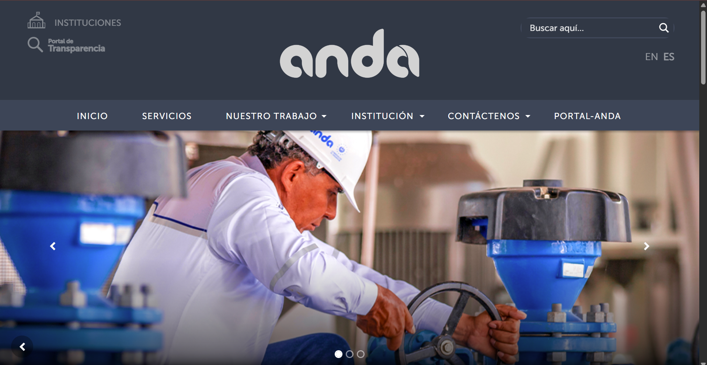
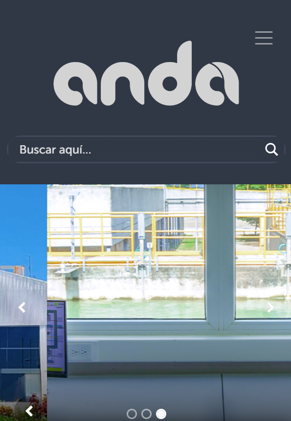

Resultado 1 - Instrucción genérica
Instrucción breve, sin material de contexto. El resultado no conserva la identidad ni el contenido real del sitio.
Ejemplos y ejercicios de Introducción al Desarrollo Web
En esta página se encuentran los ejemplos y ejercicios realizados durante la primera guía de Desarrollo Web.
Sitio salvadoreño seleccionado: Administración Nacional de Acueductos y Alcantarillados (ANDA) . A partir de su página de inicio se ejecutaron dos instrucciones distintas en una herramienta de inteligencia artificial: una genérica y una elaborada con contexto. Ambos resultados están publicados como sitios independientes.
Se revisó la página de inicio de anda.gob.sv y se identificaron tres aspectos concretos susceptibles de mejora en cuanto a estructura y presentación visual:


Mejora la página de inicio del sitio web de ANDA de El Salvador. Hazla más moderna y ordenada. Dame el código.
Actúa como diseñador y desarrollador web front-end. Vas a rediseñar la página
de inicio de un sitio salvadoreño real, y voy a darte todo el contexto antes de
pedirte el código.
SITIO
Administración Nacional de Acueductos y Alcantarillados (ANDA), El Salvador.
URL: https://www.anda.gob.sv/
Es la institución pública que provee agua potable y alcantarillado en el país.
CONTEXTO 1 — Estructura actual del sitio (tomada del código fuente)
- Barra institucional superior con enlaces a "Instituciones" y "Portal de
Transparencia".
- Encabezado con el logotipo y un buscador.
- Menú principal con submenús de hasta tres niveles: Inicio, Servicios, Nuestro
Trabajo, Institución (Antisoborno, Marco Institucional, Planificación, Logros y
Memorias, Portal de Transparencia, Estados Financieros), Contáctenos
(Información Pública, Preguntas Frecuentes, Contáctenos, Directorio) y
Portal-ANDA. Varios elementos del menú apuntan a "#".
- Carrusel de tres banners decorativos (archivos BANNER-TRANSITORIO-1/2/3.jpg
subidos en 2022).
- Bloque "Servicios Frecuentes" con: Sistema de Factibilidades y Descarga tu
Factura.
- Bloque "Noticias" con seis notas.
- Bloque "Avisos" con notas de 2023, 2024 y 2025.
- Fila de accesos: Descargas, Preguntas Frecuentes, Programas, Videos, Avisos.
- Pie con redes sociales, mapa del sitio, política web, preguntas frecuentes,
carta de derecho, dirección, teléfono 915 y los logotipos del Gobierno.
CONTEXTO 2 — Problemas que quiero resolver (mi diagnóstico)
1. La página no prioriza los trámites que la gente busca: el carrusel decorativo
ocupa el lugar principal y los accesos útiles compiten con enlaces
institucionales.
2. La navegación es demasiado profunda, está duplicada y tiene enlaces que no
navegan.
3. No se distingue el contenido vigente del archivado: hay avisos de 2023 junto a
noticias de 2026, con el mismo peso visual. Además los iconos mezclan estilos
y falta espacio en blanco.
CONTEXTO 3 — Contenido real que debe aparecer (no inventes datos)
- Trámites principales: descargar factura con NPE, pagar en línea en el Portal
Ciudadano (915.gob.sv), reportar fuga o falta de agua, solicitar nuevo servicio
(factibilidad).
- Línea de atención: 915.
- Dirección: Colonia Libertad, Avenida Don Bosco, Edificio Administrativo ANDA,
San Salvador Centro, El Salvador.
- Noticias reales del sitio:
* 26/08/2026 — Modernización de la planta de bombeo Palmeras de París, que
beneficia a más de 7,500 habitantes del distrito de Armenia, Sonsonate Este.
* 19/08/2026 — Trabajos preventivos en la infraestructura eléctrica del Sistema
Zona Norte.
* 29/07/2026 — Laboratorio de micro y macromedición del agua potable.
- Enlaces institucionales obligatorios: Instituciones (instituciones.gob.sv) y
Portal de Transparencia.
- Si un texto no está en esta lista, escribe contenido de ejemplo y márcalo como
tal en un comentario. No inventes cifras, correos ni teléfonos.
CONTEXTO 4 — Identidad de marca
- Azul institucional profundo como color base, con un celeste de acento; el tema
es el agua, así que la paleta debe leerse fría y limpia.
- Tono formal pero cercano, propio de una institución pública que atiende a todo
el país.
- Nada de morados ni degradados de moda: el sitio debe verse institucional, no de
startup.
CONTEXTO 5 — Referencias visuales
Sitios de servicio público donde el trámite está al frente: GOV.UK y los portales
de compañías de agua y electricidad donde lo primero que se ve es "pagar factura"
y "reportar una falla". Quiero esa lógica: contenido antes que decoración.
RESTRICCIONES TÉCNICAS (obligatorias, es una tarea de universidad)
- Solo HTML5 y CSS3. Sin frameworks (nada de Bootstrap ni Tailwind) y sin
JavaScript.
- Las reglas de estilo deben ir en una hoja externa vinculada con
<link rel="stylesheet">. No uses estilos embebidos ni atributos style.
- Usa clases e id de forma clara y consistente.
- Diseño responsivo: debe funcionar bien en teléfono, tableta y escritorio.
- Accesible: contraste suficiente, textos alternativos, foco visible con teclado.
- Sin imágenes externas: usa degradados CSS e iconos SVG en línea, salvo un
archivo SVG para el logotipo.
- Comenta el CSS en español explicando cada bloque, porque tengo que explicar el
código en un video.
QUÉ QUIERO QUE ENTREGUES
1. index.html completo.
2. css/estilos.css completo.
3. El archivo SVG del logotipo.
4. Al final, una lista de las técnicas de CSS y HTML que usaste que van más allá
de lo básico (etiquetas semánticas, flexbox, grid, variables, media queries,
etc.), con una frase que explique qué función cumple cada una.
ESTRUCTURA QUE ESPERO EN LA PÁGINA
Barra institucional, encabezado fijo con logotipo y menú de un solo nivel,
portada con un mensaje claro y dos acciones, bloque de trámites principales
destacado sobre la portada, aviso de servicio vigente y fechado, noticias con
fecha visible, canales de atención, preguntas frecuentes desplegables y pie con
la información institucional.
Instrucción breve, sin material de contexto. El resultado no conserva la identidad ni el contenido real del sitio.
Instrucción construida con el código del sitio, capturas de pantalla, referencias visuales y notas de marca. Es el resultado final del reto.
Clasificación del código del resultado final en contenido ya estudiado en el curso y contenido nuevo, con la función que cumple cada elemento.
Explicación del procedimiento, las instrucciones utilizadas, los resultados obtenidos y el análisis de correspondencia.